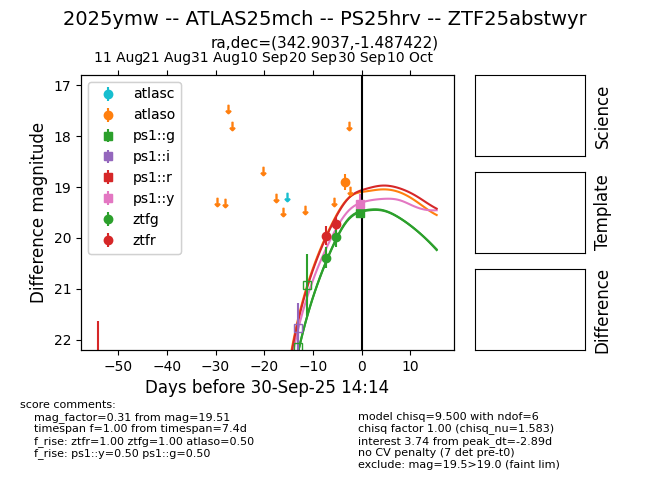
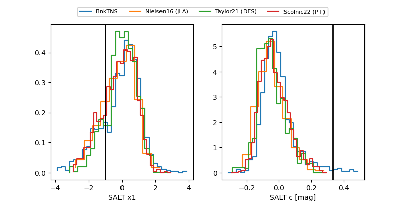

FINK: ZTF25abstwyr
Lasair: ZTF25abstwyr
ALeRCE: ZTF25abstwyr
TNS: 2025ymw
YSE: 2025ymw
2025ymw (yse,tns)
ZTF25abstwyr (ztf,fink)
ATLAS25mch (atlas)
PS25hrv (panstarrs)
equatorial (ra, dec) = (342.9037,-1.48742)
galactic (l, b) = (69.6149,-51.50586)


last atlaso=18.90, ps1::g=19.51, ps1::y=19.32, ztfg=19.98, ztfr=19.72
1 atlaso, 1 ps1::g, 1 ps1::y, 2 ztfg, 2 ztfr detections